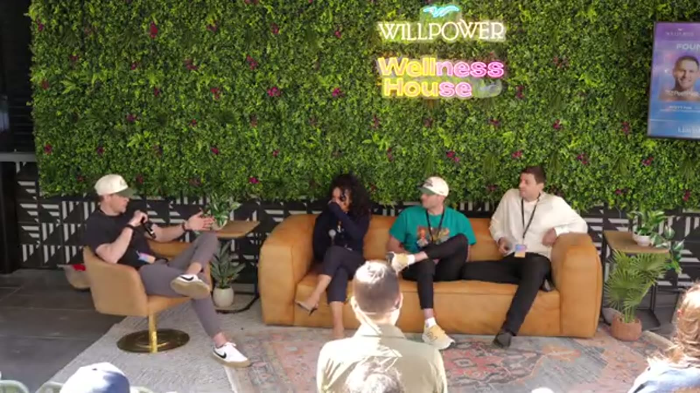

Six months in, already in court
Sam Nebel co-founded Good Wipes and was six months in when a competitor came at them with an IP lawsuit.
An actual lawsuit, filed.
12.5 years later Good Wipes is in stores across the country and Sam is sitting on a Willpower panel telling the room about it.
The lawsuit did not kill them. It introduced him early to the thing every long-haul founder learns, which is that a version of this is always waiting. The only question is whether you are still standing when it passes.
"Every year is a new experience." That is his whole thesis on what 12 plus years actually looks like. The lawsuit was year one.

The Sri Lanka call
Hila Stoch built 437 Activewear and came one phone call away from not having it any more.
Her entire production sat in Sri Lanka. The economy collapsed in 2022.
She picked up the phone not knowing if the factory was running, if the people she worked with still had jobs, or if her inventory existed.
The call went through. The factory was up. She shipped.
Every founder talks about resilience like it is a personality trait. Her version is sharper: sometimes the whole business hangs on one call going a certain way, and you either make it or you do not.
She made it!
"Taking back creative control after years of playing it safe was the turning point. We had to be willing to lose some customers to gain the right ones."
Hila Stoch, Founder, 437 ActivewearThree years of a four day week, no investors to argue with
437 has run a four day work week for three straight years.
No investor pressure to reverse it. No board asking for productivity data.
Hila built the company without outside capital, so she runs it how she likes. The four day week was a decision about what kind of company she wanted to lead, and it bought her retention, morale, and a team that wants to be there.
The read for founders is uncomfortable. The companies with the most freedom to build their own way are often the ones who never took the money. Slower access to capital, total control of how the place operates.
Porta Palace turned into a marketing strategy by accident
Brian at It's That Simple has 10,000 grocery locations and a thing called Porta Palace.
He did not design it as guerrilla marketing. It became one.
A mobile setup that hits 15 to 20 events a year and turns any space into a brand experience. It makes content. It makes relationships with people who turn into long term advocates.
At their distribution scale they need both engines. The stores buy them passive availability. Porta Palace buys them people who actually talk.
"Know what your business is built for. Chasing every opportunity sounds good until you realize you've optimized for nothing."
Brian, Founder, It's That SimpleKnow what your business is built for
Brian's sharpest minute of the panel. Every business has a lane, and the trouble starts when you chase things outside it.
It's That Simple is built for grocery retail. When something shows up that looks like a fast win and drags them out of that lane, the answer is no.
"Every opportunity can look good on paper. Most of them aren't right for your business."
Sam's version after 12.5 years: the clearest sign a business is drifting is founders taking meetings they already know they should skip. The distraction is not the problem. The willingness to be distracted is.
What creative control actually cost Hila
Early 437 made product and marketing calls designed to please as many people as possible. Safe colors. Styles that could not offend. Content nobody would argue with.
It sort of worked. Growth was slow and the brand looked like a dozen other activewear companies.
Taking creative control back meant making calls that would lose customers on purpose. Bolder designs, a specific aesthetic, a clear point of view on who this is for right now.
The people who left got replaced by people who stayed far longer and turned into advocates.
What to take home
- Sam is 12.5 years in and the lawsuit was year one. If you are in year one of something brutal, the only data point that matters is whether you are standing in year 12.
- Hila's creative control pivot improved retention among the customers who stayed. A brand that means something specific is worth more to the right people, and that math compounds.
- Brian's lane discipline is a real framework. Write down what your business is optimized for, then test every opportunity against it.
- Three consecutive years of a four day week with no reversion. Structural freedom usually belongs to the founders who never took outside money.
- The Porta Palace model works for any physical product. Find the activation that creates advocates, then make it a repeating event instead of a launch stunt.